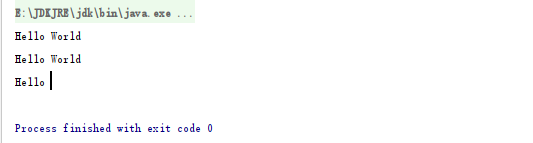

String可变吗？
1 | public class Test1 { |
我们都知道Java中的String是不可变的, 那上面段代码应该输出：0000, 这样才和不变性吻合。可实际上是这样吗, 并不是, 事实上输出的是：1111。那这是不是和不变性的说法冲突了呢？我们先来看下面一段话：
其实在JVM的运行中，会单独给一块地分给String。我们知道字符串的分配和其他对象分配一样，是需要消耗高昂的时间和空间的，而且字符串我们使用的非常多。JVM为了提高性能和减少内存的开销，在实例化字符串的时候进行了一些优化：
使用字符串常量池。每当我们创建字符串常量时，JVM会首先检查字符串常量池，如果该字符串已经存在常量池中，那么就直接返回常量池中的实例引用。如果字符串不存在常量池中，就会实例化该字符串并且将其放到常量池中。由于String字符串的不可变性我们可以十分肯定常量池中一定不存在两个相同的字符串。
在上面的代码中，首先会先去JVM的常量池中查找有没有”0000”这个对象，如果找到了，直接将该对象的引用地址赋值给str。找不到的话会创建一个对象，并且将其引用赋给str, str = “1111”也是同理。所以str实际上保存的是字符串在内存中的地址，str只是一个引用变量，真正不可变的是”0000”。
String为什么是不可变的?
我们来看看他的源码
1 | public final class String |
从上面的这段源码中可以看出三点：
String 类是final修饰
String存储内容使用的是char数组
char数组是final修饰
所以，实际上我们在创建一个String对象的时候，内容被保存在了char数组中，而由于char数组被final修饰，所以不可变。
1 | public class Test1 { |
这里复习一下，final有啥用
当用final修饰一个类时，表明这个类不能被继承。也就是说，如果一个类你永远不会让他被继承，就可以用final进行修饰。final类中的成员变量可以根据需要设为final，但是要注意final类中的所有成员方法都会被隐式地指定为final方法。
当final修饰的方法表示此方法已经是“最后的、最终的”含义，亦即此方法不能被重写（可以重载多个final修饰的方法）。此处需要注意的一点是：因为重写的前提是子类可以从父类中继承此方法，如果父类中final修饰的方法同时访问控制权限为private，将会导致子类中不能直接继承到此方法，因此，此时可以在子类中定义相同的方法名和参数，此时不再产生重写与final的矛盾，而是在子类中重新定义了新的方法。（注：类的private方法会隐式地被指定为final方法。）
当final修饰一个基本数据类型时，表示该基本数据类型的值一旦在初始化后便不能发生变化。如果final修饰一个引用类型时，则在对其初始化之后便不能再让其指向其他对象了，但该引用所指向的对象的内容是可以发生变化的。本质上是一回事，因为引用的值是一个地址，final要求值，即地址的值不发生变化。另外final修饰一个成员变量（属性），必须要显示初始化。这里有两种初始化方式，（在申明的时候给其赋值，否则必须在其类的所有构造方法中都要为其赋值）
再来看一个String的案例
1 | public class Test1 { |
输出：

无论是concat、replace、substring还是trim方法的操作都不是在原有的字符串上进行的，而是重新生成了一个新的字符串对象。也就是说进行这些操作后，最原始的字符串并没有被改变。这里踩过几个坑。。。
得出两个结论：
String对象一旦被创建就是固定不变的了，对String对象的任何改变都不影响到原对象，相关的任何变化性的操作都会生成新的对象。
String对象每次有变化性操作的时候，都会重新new一个String对象（这里指的是有变化的情况）。
finally, 探究下String s = new String(“111”)会创建几个对象？
接触Java后都知道可以new一个对象。所以 String s = new String(“111”);就是创建一个对象然后把对象引用地址赋给变量s。但是这里有个特殊点，那就是（“111”）,这里会先去JVM里的那块常量池里找找有没有这个对象，找到了直接将引用地址赋给String的构造方法。找不到就创建一个对象然后把引用地址给String的有参构造方法。
所以答案是:
如果常量池中存在，则只需创建一个对象，否则需要创建两个对象。